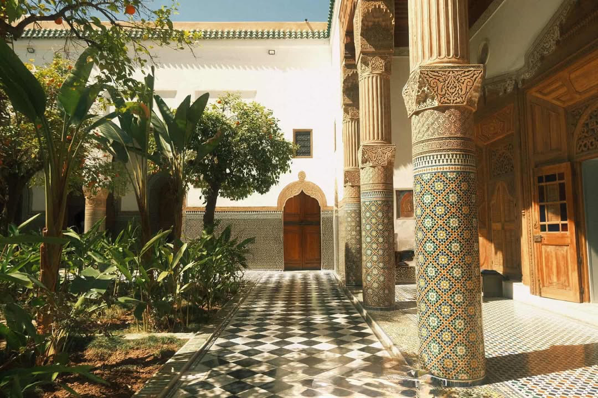

This is a picture of me in Turkey! As you can probably tell, I absolutely love traveling. For me, traveling is more than just visiting new places; it’s a way to recharge my soul, escape routine, and experience life from a different perspective. Every trip feels like a new chapter filled with memories, lessons, and stories to bring back home.
What I love most about traveling is the mix of adventure and discovery. Whether it’s walking through the vibrant streets of Istanbul, tasting authentic local food, or meeting people from completely different backgrounds, every moment feels refreshing and eye-opening. Traveling gives me a chance to slow down, step outside my comfort zone, and really connect with the world around me.
Turkey in particular has such a unique charm. It’s where East meets West, blending history, culture, and breathtaking landscapes in one place. Standing by the Bosphorus or exploring ancient mosques reminded me how vast and beautiful our world truly is. Those little moments, like sipping Turkish tea while watching the sunset, are what make traveling so special to me.
At the end of the day, traveling isn’t just about ticking places off a list. It’s about the feeling of wonder, growth, and joy that comes with exploring. Each trip leaves me with a piece of the world to carry forever.
Exploring Morocco: A Journey Through Culture and Color
by
Mahfuza Meem

Here I am in Morocco! Honestly, this trip was a completely different vibe from anywhere I’ve been before. Morocco is full of energy, colors, and culture that hit you from the moment you step off the plane.
One of the coolest parts was exploring the medinas, especially in Marrakech. The streets are alive with music, chatter, and vendors calling out their wares. Every corner has something new to see, from lantern shops to spice markets and tiny cafes tucked away in alleys. It felt like being in a maze of surprises, and I loved getting a little lost along the way.
The food in Morocco was another highlight. From sweet mint tea to savory tagines, every bite was packed with flavor and tradition. I even tried street snacks I had never heard of before, which made eating feel like its own kind of adventure.
But the real magic happened in the desert. Riding a camel across the dunes at sunrise was something I will never forget. The vast, golden landscape made everything else fade away. It was quiet, humbling, and totally breathtaking.
Morocco reminded me why I love traveling so much. It is not just about seeing new places; it is about diving into a culture, tasting its flavors, and soaking in moments you will remember forever. This trip left me inspired, energized, and already dreaming of the next adventure.
Here’s a quick summary of some highlights from my Morocco trip: